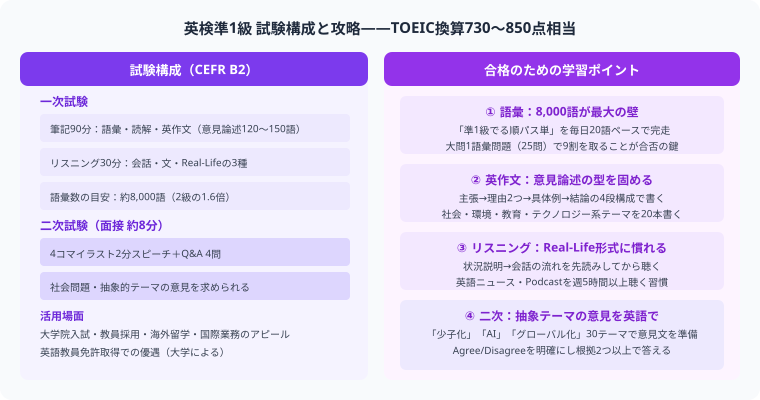

英検準1級は大学中級程度の英語力を証明する難関資格です。TOEIC換算で730〜850点レベルの英語力が必要とされ、合格率は約15〜20%にとどまります。一次試験（筆記90分＋リスニング約30分）と二次試験（スピーチ形式の個人面接）の2段階構成で、語彙・読解・ライティング・スピーキングすべての技能が問われます。本記事では一次・二次試験のパート別攻略と12ヶ月学習スケジュールを詳しく解説します。

英検準1級はCEFR B2レベルで、TOEIC換算で730〜850点相当の英語力が求められます。2級から準1級へのジャンプは語彙数が約1.6倍になる大きな壁があります。
| 項目 | 内容 |
|---|---|
| レベル | 大学中級程度、TOEIC換算で約730〜850点レベル |
| 一次試験 | 筆記（90分）＋リスニング（約30分） |
| 二次試験 | 個人面接 スピーチ形式（約8分） |
| 合格率 | 約15〜20%（難関） |
| 活用場面 | 英語教員免許取得の優遇、TOEICより評価されるケースあり、就職・昇進で高評価 |
| 現在の英語力 | 目安勉強時間 |
|---|---|
| 英検2級取得済み | 300〜500時間 |
| TOEIC700点台 | 200〜350時間 |
| 1日2時間学習の場合 | 1年〜1年半 |
難関資格ですが、計画的に取り組めば独学合格も十分可能です。パス単（語彙）・過去問（読解・リスニング）・英作文対策の3本柱を軸に学習を進めましょう。スピーキングはオンライン英会話で補うのが定番の独学スタイルです。
英検準1級には約7,500語の語彙力が必要です。英検2級の5,000語から大幅に増えるため、語彙強化が合格の最重要課題です。「でる順パス単 準1級（旺文社）」を繰り返し学習するのが定番の最短ルートです。派生語（名詞・動詞・形容詞の変化形）や前置詞のコロケーション（comply with、result inなど）も合わせて覚えることが高得点につながります。1日30〜40語を目標に継続しましょう。
空所補充と内容一致の2形式で出題されます。テーマは抽象的な社会問題・科学・環境・文化など多岐にわたります。精読よりも「速読＋設問処理」が重要で、段落ごとの主旨を素早くつかみ選択肢を絞り込む練習を積みましょう。英字新聞（The Japan Timesなど）や英語のニュースサイトを毎日読む習慣が長期的な読解力向上に直結します。
意見論述問題で200〜240語を書きます。4段落構成（導入→理由1→理由2→まとめ）を固定パターンとして習得することが最優先です。高度な表現を狙うより、減点されない文法・語彙を安定して使う練習を繰り返しましょう。週2〜3本書いてフィードバックを受けるサイクルが理想的です。
| 段落 | 内容 | 使えるフレーズ |
|---|---|---|
| 導入（2〜3文） | 話題提示と自分の立場表明 | I believe that ～ / It is often argued that ～ |
| 理由1（3〜4文） | 1つ目の理由と具体例・データ | First, ～ / For instance, ～ |
| 理由2（3〜4文） | 2つ目の理由と具体例・データ | Second, ～ / Furthermore, ～ |
| まとめ（2〜3文） | 立場を再確認して締める | In conclusion, ～ / For these reasons, I believe ～ |
会話形式と講義形式の長い音声が出題されます。設問を先読みしてキーワードを把握してから集中して聞き、解答後に見直す「先読み→集中→見直し」のリズムを確立することが得点アップの近道です。ポッドキャスト（NPR、BBCなど）を日常的に聞く習慣が耳を慣らし、本番の聴解力向上に効果的です。
二次試験は個人面接形式（約8分）です。4コマ漫画のナレーションと社会問題に関する質疑応答が中心となります。
| 試験の流れ | 内容 | 攻略ポイント |
|---|---|---|
| ナレーション（2分） | 4コマ漫画の場面を英語で説明 | 「One day, ... First, ... Then, ... Finally, ...」の流れで人物の行動と感情を描写する |
| 質問1 | 4コマ漫画に関連した質問 | コマの内容を根拠に答える。短くても構造的な回答を心がける |
| 質問2〜4 | 社会問題に関する意見（3〜4問） | 「That's a good point. I think ... because ...」で始め、理由を2つ述べる |
実践練習はオンライン英会話週2〜3回が目安です。社会問題（環境・テクノロジー・教育・少子化など）について日本語でも英語でも意見を整理しておくと、本番で慌てずに対応できます。沈黙を避けるため「Well, ...」「Let me think ...」などのつなぎ表現も練習しておきましょう。
| 時期 | 内容 | 1日の目安 |
|---|---|---|
| 1〜3ヶ月目 | 語彙（パス単1周）＋文法の穴を埋める | 2時間 |
| 4〜6ヶ月目 | 長文読解・リスニング強化、英作文テンプレート習得 | 2時間 |
| 7〜9ヶ月目 | 過去問5回分、弱点補強 | 2〜2.5時間 |
| 10〜12ヶ月目 | 過去問10回分＋面接練習（オンライン英会話） | 2〜3時間 |